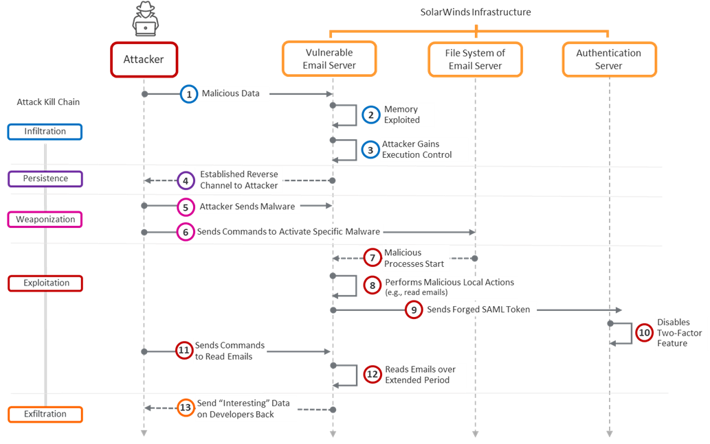

Introduction

The SolarWinds exploit was a sophisticated cyberattack that targeted various organizations, compromising their digital infrastructure. To better understand and address this attack, we can leverage the Cyber Kill Chain framework, which breaks down the attack lifecycle into distinct phases. In this article, we will create a table analyzing the SolarWinds exploit using the Cyber Kill Chain, propose mitigations for each phase, identify any challenges in mitigation, and discuss the tools to be utilized at each stage.
1. Analyzing the SolarWinds Exploit Using the Cyber Kill Chain
| Phase |
Description |
Identified |
| Reconnaissance |
Gathering information about the target organization. |
Yes |
| Weaponization |
Creating or obtaining the malicious payload. |
Yes |
| Delivery |
Delivering the payload to the target system. |
Yes |
| Exploitation |
Exploiting vulnerabilities to execute the payload. |
Yes |
| Installation |
Installing the malware on the compromised system. |
Yes |
| Command and Control |
Establishing communication channels for control. |
Yes |
| Actions on Objectives |
Achieving the attacker's goals within the compromised system. |
Yes |
2. Mitigations for Each Phase
Reconnaissance
- Implement strict access controls and limit information exposure.
- Monitor and analyze network traffic for unusual patterns.
Weaponization
- Employ advanced threat detection systems to identify malicious payloads.
- Regularly update and patch software to eliminate known vulnerabilities.
Delivery
- Employ email filtering solutions to detect and block phishing attempts.
- Utilize intrusion detection and prevention systems to monitor network traffic.
Exploitation
- Regularly update and patch software to close vulnerabilities.
- Utilize endpoint protection solutions to detect and block exploitation attempts.
Installation
- Implement application control to restrict unauthorized software installation.
- Utilize behavioral analysis tools to detect abnormal system changes.
Command and Control
- Employ network monitoring tools to identify suspicious communication.
- Implement robust firewalls to restrict unauthorized outbound connections.
Actions on Objectives
- Conduct regular audits and penetration testing to identify and address vulnerabilities.
- Implement a comprehensive incident response plan to minimize impact.
Challenges in Mitigation
While mitigation strategies can significantly reduce the risk, it's important to note that achieving 100% security is challenging due to the evolving nature of cyber threats. Zero-day vulnerabilities and highly sophisticated attacks may pose challenges in mitigation.
3. Tools for Each Phase
Reconnaissance
- OSINT tools (e.g., Shodan, WHOIS).
- Security Information and Event Management (SIEM) systems.
Weaponization
- Antivirus and antimalware solutions.
- Sandboxing tools for analyzing suspicious files.
Delivery
- Email filtering solutions (e.g., Microsoft Defender for Office 365).
- Intrusion Detection and Prevention Systems (IDPS).
Exploitation
- Vulnerability scanning tools.
- Endpoint protection solutions.
Installation
- Application control tools.
- Behavioral analysis tools (e.g., Carbon Black).
Command and Control
- Network monitoring tools (e.g., Wireshark).
- Next-generation firewalls.
Actions on Objectives
- Penetration testing tools.
- Incident response platforms.